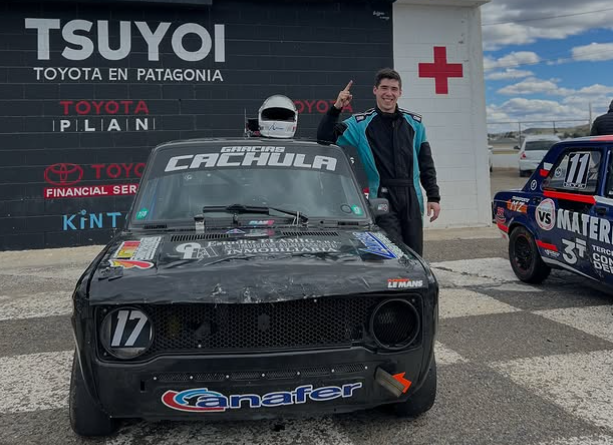

Leo Carrión se prepara para correr en Comodoro

El automovilismo zonal vuelve este fin de semana a Comodoro Rivadavia y Leo Carrión trabaja contrarreloj para poder ser parte de la segunda fecha del campeonato, en una categoría tan competitiva como el TP 1100.
En la previa, el piloto destacó el trabajo que vienen realizando junto a su equipo, que hoy cuenta con tres autos en pista y continúa creciendo carrera a carrera. “Hoy hicimos una prueba con los tres autos del equipo, todo funcionando bien, con detalles a corregir, pero trabajados a tiempo para llegar de la mejor manera”, contó.
La primera fecha en Trelew dejó un balance marcado por el esfuerzo y la solidaridad dentro del ambiente. Tras una rotura de motor que parecía dejarlo fuera de competencia, Carrión pudo largar la final gracias a la ayuda de otro equipo. “Ya tenía todo cargado para volverme, pero unos amigos del valle nos dieron una mano con un motor y pudimos correr”, relató.
Desde el fondo del pelotón, el piloto logró avanzar hasta el puesto 15, sumando puntos importantes en un campeonato donde el nivel es cada vez más alto. “La categoría tiene un parque muy grande, nadie te regala nada y el nivel de manejo es muy alto”, explicó.
Más allá del resultado, Carrión también remarcó el valor del trabajo en conjunto dentro del equipo, acompañando a nuevos pilotos que están dando sus primeros pasos en la categoría. “Tratamos de aportar desde la experiencia para que los chicos puedan desarrollarse. Es lindo poder acompañarlos en este proceso”, señaló.
Detrás de cada fecha hay un esfuerzo enorme para poder estar en pista, algo que el propio piloto dejó en claro al momento de hablar de quienes lo acompañan. “Más que sponsors, son amigos. Todos ponen un granito de arena para que podamos correr”, expresó, agradeciendo a cada uno de sus sponsors.
En un contexto económico complejo, Carrión todavía trabaja para terminar de cerrar el presupuesto que le permita estar presente este fin de semana en el autódromo local. “Falta poquito, estamos tratando de llegar para poder estar el viernes. Lo importante es que el auto funciona bien y eso nos deja tranquilos”, afirmó.
Más allá de lo deportivo, el piloto también dejó una invitación abierta para todo el público, destacando la importancia de acompañar al automovilismo zonal en cada fecha. El mensaje completo, junto a toda la charla, se puede escuchar en la entrevista completa, donde Carrión comparte su mirada sobre la categoría, el esfuerzo detrás de cada carrera y lo que significa correr en casa.
Este fin de semana, todos al autódromo para vivir la segunda fecha del automovilismo zonal, acompañar a los pilotos y seguir disfrutando de un espectáculo que se construye a pulmón, carrera a carrera.
Escuchá la entrevista completa
🎧 La charla completa con Leo Carrión en la previa de la segunda fecha en Comodoro.
Dale play y escuchá la entrevista completa.